Development
RED je lídrom v oblasti rezidenčného developmentu so zameraním na projektovanie a budovanie realitného fondu. Špecializujeme sa na komplexný manažment výstavby – od plánovania a organizácie až po realizáciu a kontrolu.
„Úspech je kolektívnym cieľom a kvalita dominujúcim prostriedkom pri napredovaní celej spoločnosti.“
Každý náš projekt je viac než len stavba – je to príležitosť pretvárať mestský priestor s víziou budúcnosti. Budujeme nielen budovy, ale aj hodnoty, ktoré pretrvajú.
Naše projektyRED je lídrom v oblasti rezidenčného developmentu so zameraním na projektovanie a budovanie realitného fondu. Špecializujeme sa na komplexný manažment výstavby – od plánovania a organizácie až po realizáciu a kontrolu.
Ponúkame široké realitné služby – kúpu, predaj, prenájom, právne poradenstvo a správu nehnuteľností, vrátane zmluvnej dokumentácie, katastra a notárskych úkonov.
Zameriavame sa na investičné a obchodné príležitosti v oblastiach ako alternatívne zdroje energie, rezidenčný development a stavebníctvo. Pre investorov prinášame možnosti kapitálového zhodnotenia v realitnom segmente.
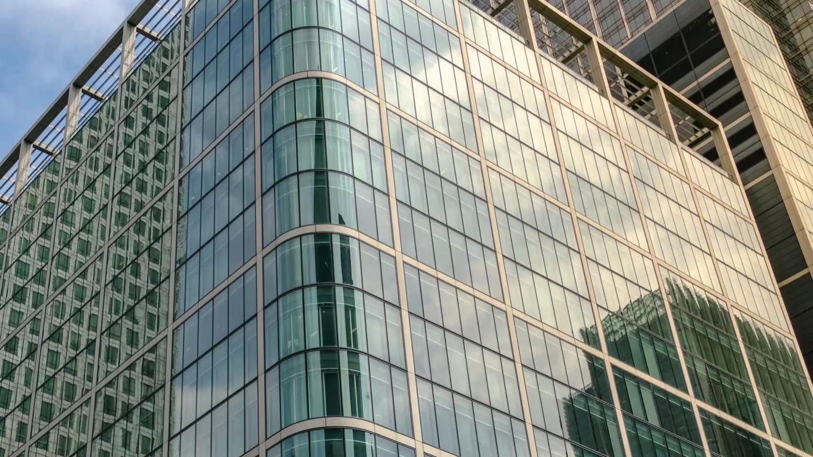
RED je ambiciózna firma, ktorá sa púšťa do odvážnych projektov a prináša inovatívne riešenia v oblasti developmentu. Na konte máme viacero úspešných realizácií.
Ing. Peter Gálpredseda predstavenstva
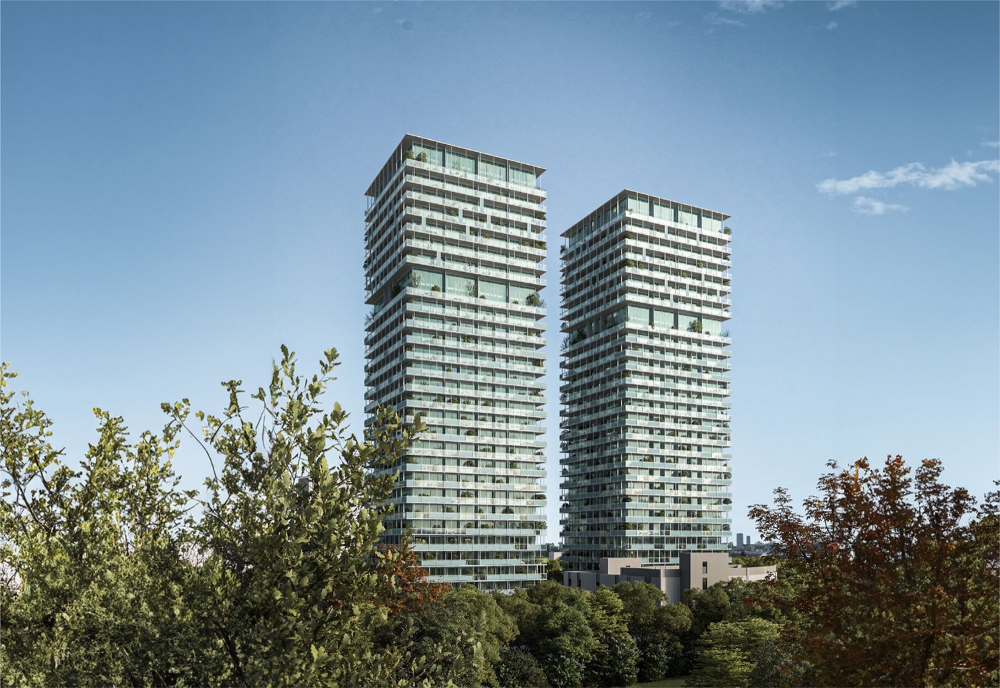
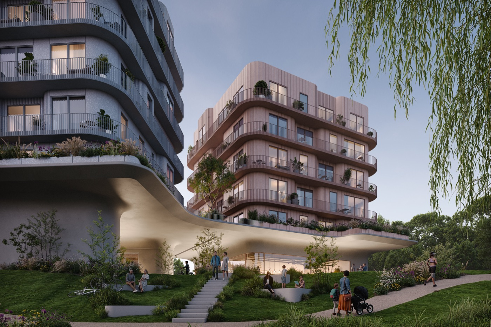
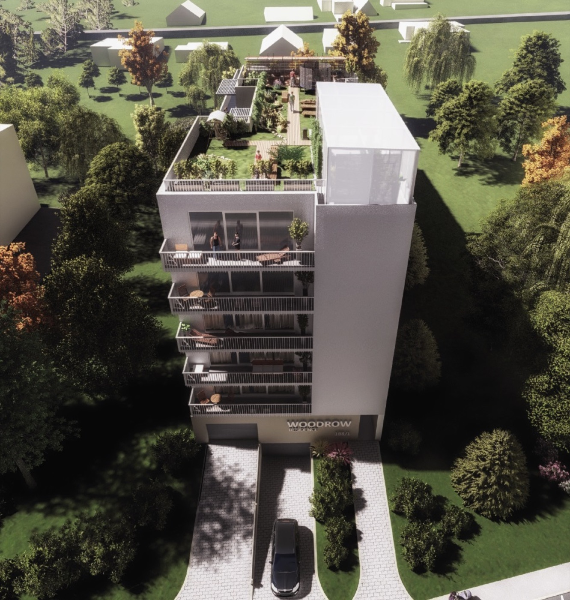
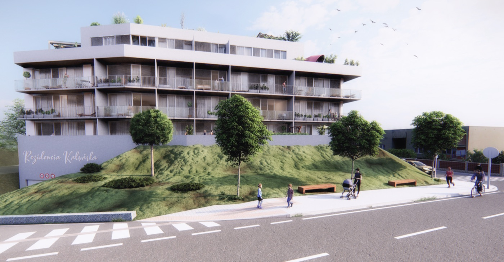
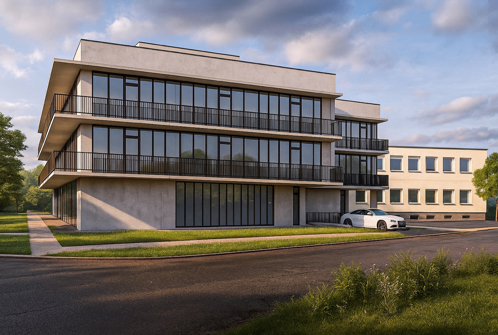
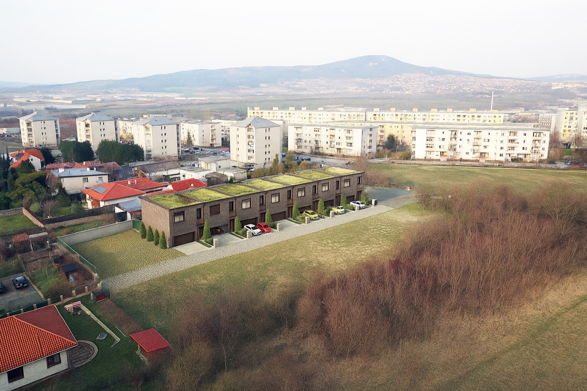
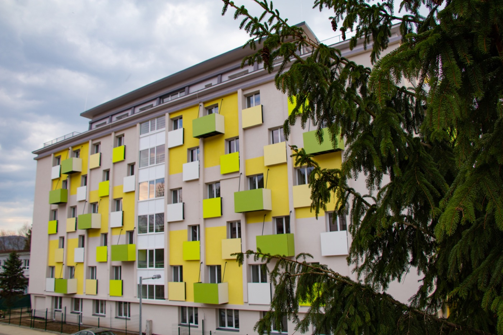
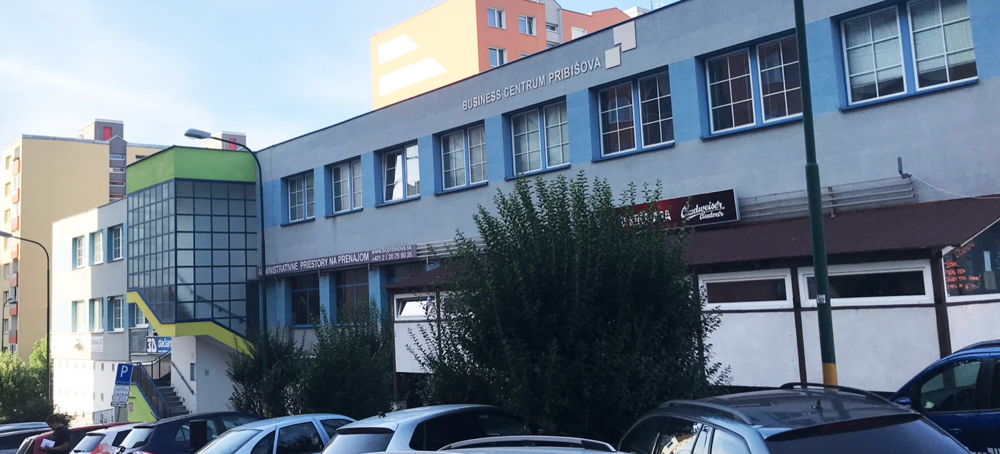
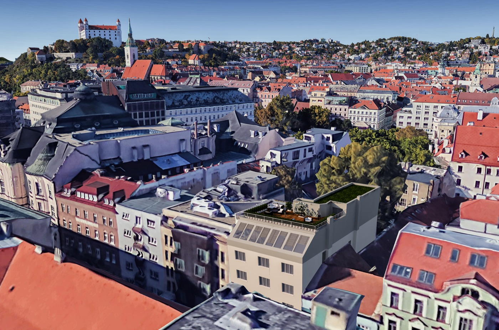
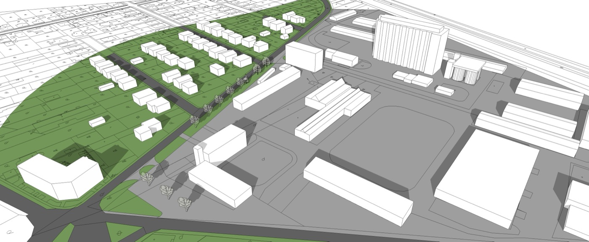
Ďalšie projekty: Nájomné byty Dobrá Niva · Nadstavba Muškátová · Nadstavba Nová Fončorda, Banská Bystrica · Family farma, Abrahám
Spoločnosť RED a.s. vyhlásila 6. februára 2024 vyzvanú projektovú jednokolovú architektonickú súťaž na polyfunkčný dom v lokalite Wilsonovo nábrežie v Nitre. Súťažné podmienky overila Slovenská komora architektov. Zvíťazil tím mladých architektov ROOKS (1. miesto, cena 16 000 €).
Business centrum Pribišova_BCP
Pribišova 47
841 05 Bratislava
Karlova Ves – Dlhé Diely
office@red.expert
+421 2/20 75 80 35
Chcete byť súčasťou tímu RED? Pošlite CV na people@red.expert